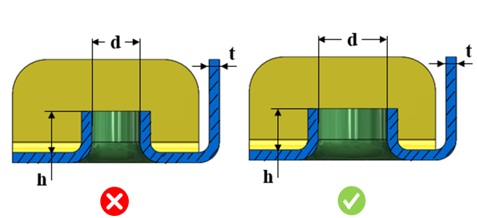

押し出し穴の高さと板厚の比は、ユーザーが指定した値以上である必要があります。
押し出し穴の高さと押し出し穴の内径の比は、ユーザーが指定した値以下である必要があります。
製造の容易性を確保するとともに、荷重条件下で発生する応力に対応するために、適切な押し出し穴高さを確保する必要があります。
一般的な指針として、押し出し穴の最小高さは板厚の少なくとも2倍以上とする必要があります。押し出し穴の最大高さは、押し出し穴の内径の0.5倍以下である必要があります。
DFMPro は押し出し穴フィーチャーを識別し、押し出し穴高さと板厚の比、および押し出し穴高さと押し出し穴内径の比を算出します。算出された実際の比は、設定された比に対して検証されます。
ユーザーは、デフォルトで設定されている比を編集できます。
ルール UI では、材料の一覧が Map Material から読み込まれ、ユーザーは材料およびそれぞれの値を設定できます。
材料とその値を設定した後、Ctrl+M コマンドを使用することで、ルール UI 上で材料グループおよびグレードとともに設定済み材料の一覧をフィルタ表示できます。同じキー（Ctrl+M）を使用して、フィルタを解除することもできます。

ここでは、
h = 押し出し穴高さ
d = 押し出し穴内径
t = 板厚